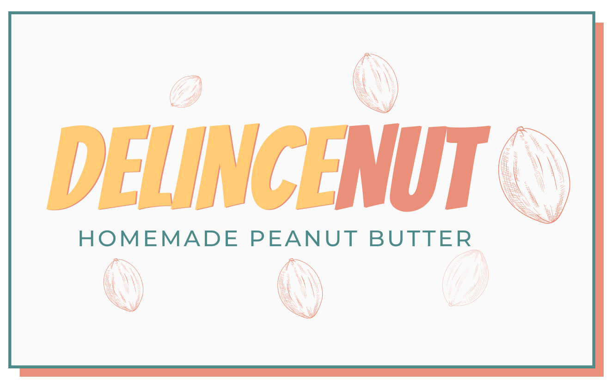

Hello I am Louis

Aspiring Programmer !
I am a web developer with experience in digital transformation, banking and the finance industry.
I am passionate about sports, especially rugby. I also love to cook and make my own peanut butter.
Rugby
I started playing ruby when I was 12 at boarding school. After enjoying throwing the ball around with my teammates, I joined Rugby Club La Hulpeto play more regulary and at a more competitive level.
Since then, I have never stopped playing and rugby brought me to so many places competing in european championships on a yearly basis.
My proudest achievements so far are my first international cap with the Belgium national senior team and to have progressed through the ranks from division 3 to belgian champion with la Hulpe in only 6 years time (see picture above).
My peanut butter brand: Delincenut
Delincenut is a delicious and healthy homemade peanut butter which is an alternative to industrial nut butters.
It is produced locallyin Brussels and exists under two forms: the sporty and the greedy. The sporty has no sugar added to its recipe and contains more proteins than the greedy which contains some chocolate, adding some sweet savour to its taste.
The pastes are produced with natural ingredient only, no artificial ingredients such as sweeteners or food preservatives are added.
The packaging process is zero-waste and plastic free as our glass jars are collected directly from consumers or fromrestaurants. They are then cleaned thorougly and rebranded.